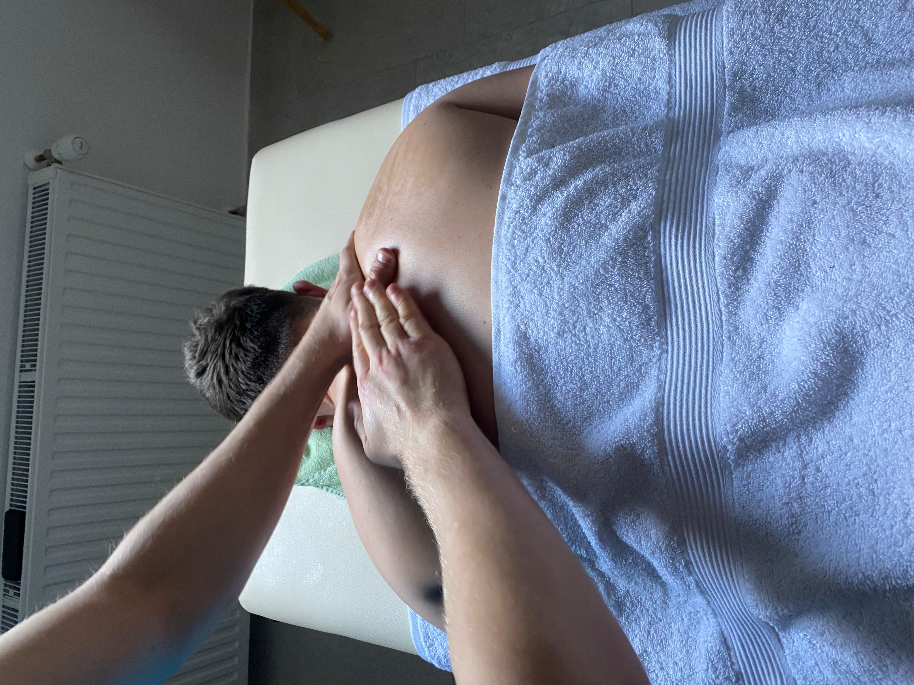
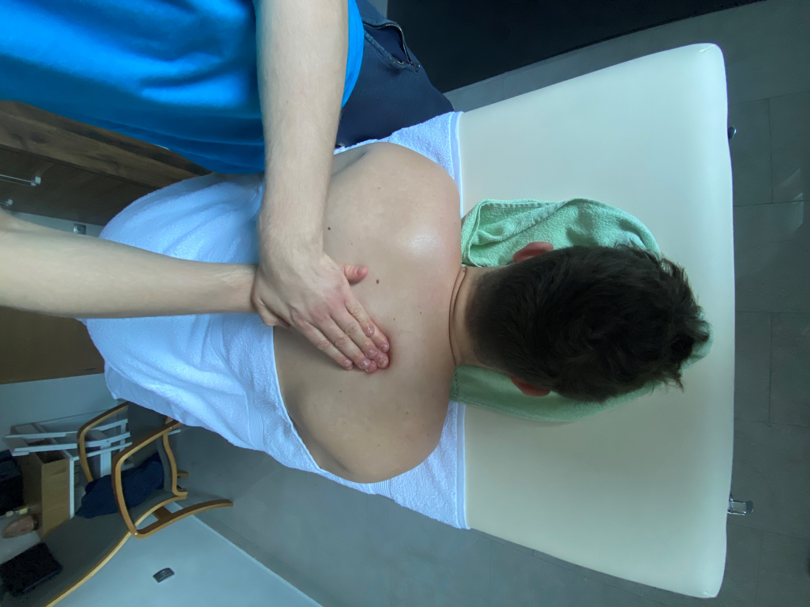

Vrste masaž
- Švedska/Klasična Masaža
- Športna masaža
Dotik je najstarejše izrazno in zdravilno sredstvo človeka. Kot pri ostalih umetnostih, se tudi pri masaži telo sprosti, kar deluje blagodejno in zdravilno na ves organizem. Pri klasični masaži se telo najprej ogreje s tehniko gladenja. Temu sledi otiranje, ki je že dosti močnejše in sega globlje v tkiva, tako da razbija vozličke. Z ožemanjem iztisnemo sproščene snovi v nadaljnjo predelavo limfnega, krvnega in prebavnega sistema telesa. S tolčenjem nadaljujemo, ko je telo dobro segreto, saj je najmočnejša tehnika in tako zmehčamo še preostala zatrjena mesta. Na koncu spet sledi gladenje, da se pospeši krvni obtok, ki s tem poskrbi, da se izločene strupnine odplavijo. Pri masaži se telesna temperatura rahlo poveča, na sami koži celo od 3 do 6 stopinj Celzija, kar pospešuje zdravljenje. Klasična masaža je odlično sredstvo proti stresu, anskioznosti, depresiji, nespečnosti, saj deluje sproščujoče za dušo in telo hkrati. Čeprav je najbolj priporočljiva pri mišičnih, vezivnih in kostnih težavah, je dobro dopolnilo zdravljenju tudi pri večini drugih bolezni in stanj. Masaža je najbolj učinkovita, če je v rednih razmakih najmanj enkrat na teden eno uro. In po nekaj tednih… se boste počutili prenovljene. Med masažo lahko izkoristite številne telesne in duševne koristi, vključno z: Večjo sprostitvijo: znano je, da švedska masaža sprošča telo in duha ter pomaga zmanjšati stres in tesnobo. Izboljša krvni obtok: dolgi udarci in krožni gibi, ki se uporabljajo pri švedski masaži, pomagajo izboljšati krvni obtok, povečajo pretok kisika in hranilnih snovi v mišice. Poveča prožnost in obseg gibanja: Masažne tehnike, ki se uporabljajo pri švedski masaži, pomagajo raztegniti in sprostiti napete mišice ter povečati prožnost in obseg gibanja. Gladka in sijoča koža: švedska masaža izboljša videz kože, jo naredi gladko, čvrsto in sijočo. Po masaži se lahko veselite dobrega počutja in umirjenosti ter zmanjšanja mišične napetosti in bolečin. Švedska masaža je razkošna in sproščujoča izkušnja, ob kateri se boste počutili pomlajene in pomlajene. Švedska masaža je razkošna terapevtska izkušnja, ki pomladi duha in telo. Naši usposobljeni masažni terapevti uporabljajo različne tehnike, vključno z dolgimi pritiski, gnetenjem in krožnimi gibi za sprostitev mišic in izboljšanje cirkulacije. Ta masaža celega telesa je zasnovana za zmanjšanje stresa in tesnobe, povečanje prožnosti in obsega gibanja ter pomladitev. Med sejo vas bodo strokovno vodili skozi niz gibov, prilagojenih vašim specifičnim potrebam. Naše maserke bodo s kombinacijo nežnega in trdnega pritiska stopile morebitno napetost in poskrbele, da boste odšli popolnoma sproščeni in pomlajeni. Ne glede na to, ali želite ublažiti boleče mišice ali samo uživati v prepotrebni negi sebe, je švedska masaža odlična možnost. Pobegnite stresu vsakdana in se prepustite blagodejnim in pomlajevalnim učinkom te razkošne masaže. Osveženi boste, polni energije in pripravljeni na spopad s svetom. Švedska masaža je razkošna terapevtska izkušnja, ki pomladi duha in telo. Za najboljše rezultate in ohranjanje sproščenega in pomlajenega stanja priporočamo tedensko švedsko masažo. Naši usposobljeni masažni terapevti uporabljajo različne tehnike, vključno z dolgimi pritiski, gnetenjem in krožnimi gibi za sprostitev mišic in izboljšanje cirkulacije. Ta masaža celega telesa je zasnovana za zmanjšanje stresa in tesnobe, povečanje prožnosti in obsega gibanja ter pomladitev. Med sejo vas bodo strokovno vodili skozi niz gibov, prilagojenih vašim specifičnim potrebam. Naše maserke bodo s kombinacijo nežnega in trdnega pritiska stopile morebitno napetost in poskrbele, da boste odšli popolnoma sproščeni in pomlajeni. Pomembno je vedeti, da švedska masaža ne sme trajati dlje kot eno uro, saj je ideja masaže pošiljanje sporočil telesu, da sproži proces okrevanja. Po eni uri telo teh sporočil ne sprejema več učinkovito. Ne glede na to, ali želite ublažiti boleče mišice ali samo uživati v prepotrebni negi sebe, je švedska masaža odlična možnost. Pobegnite stresu vsakdana in se prepustite blagodejnim in pomlajevalnim učinkom te razkošne masaže. Osveženi boste, polni energije in pripravljeni na spopad s svetom.
 Iščete masažo, ki je prilagojena potrebam aktivnih posameznikov? Športna masaža je morda to, kar potrebujete. Naši usposobljeni maserji uporabljajo različne tehnike, vključno z masažo globokih tkiv, terapijo sprožilnih točk in drugimi ciljno usmerjenimi tehnikami, ki pomagajo ublažiti bolečine v mišicah in izboljšati njihovo delovanje. Med športno masažo lahko pričakujete številne telesne in duševne koristi, med drugim: Olajšanje bolečin v mišicah in utrujenosti: ciljno usmerjene tehnike, ki se uporabljajo pri športni masaži, lahko pomagajo ublažiti bolečine v mišicah in izboljšajo čas okrevanja. Okrepljen pretok krvi: Izboljšana prekrvavitev lahko pripomore k dovajanju kisika in hranilnih snovi v mišice, kar podpira proces celjenja in zmanjšuje tveganje za poškodbe. Izboljšana gibljivost in obseg gibanja: Masažne tehnike, ki se uporabljajo pri športni masaži, lahko pomagajo raztegniti in sprostiti napete mišice ter tako povečajo gibljivost in obseg gibanja. Sprostitev in zmanjšanje stresa: Čeprav je športna masaža namenjena odpravljanju specifičnih mišičnih težav, lahko zagotovi tudi sprostitev in zmanjšanje stresa. Športna masaža je idealna za aktivne posameznike, ki želijo optimizirati svojo telesno zmogljivost in čas okrevanja. Ne glede na to, ali ste športnik, ki želi izboljšati svojo igro, ali preprosto potrebujete okrevanje po treningu, vam lahko športna masaža pomaga, da se boste počutili najbolje. Izkusite prednosti te ciljno usmerjene in pomlajevalne masaže ter dvignite svojo telesno zmogljivost na višjo raven. Športna masaža je ciljno usmerjena in terapevtska izkušnja, ki je namenjena aktivnim posameznikom, da optimizirajo svojo zmogljivost in okrevanje. Da bi dosegli najboljše rezultate in ohranili optimalno delovanje mišic, je priporočljivo redno obiskovati športno masažo. Naši usposobljeni maserji uporabljajo različne tehnike, vključno z masažo globokih tkiv, terapijo sprožilnih točk in drugimi ciljno usmerjenimi tehnikami, da bi ublažili bolečine v mišicah in izboljšali njihovo delovanje. Med športno masažo lahko pričakujete številne telesne in duševne koristi, vključno z lajšanjem bolečin v mišicah in utrujenosti, izboljšanim pretokom krvi ter izboljšano gibljivostjo in obsegom gibanja. Pomembno je opozoriti, da športna masaža ne sme trajati več kot 45 minut do ene ure, saj je pritisk med masažo veliko večji kot pri švedski masaži in je lahko za telo neprijeten za daljše časovno obdobje. Ne glede na to, ali ste športnik, ki želi izboljšati svoje dosežke, ali pa preprosto potrebujete okrevanje po treningu, je športna masaža odlična izbira. Izkusite prednosti te ciljno usmerjene in pomlajevalne masaže ter dvignite svojo telesno zmogljivost na višjo raven.